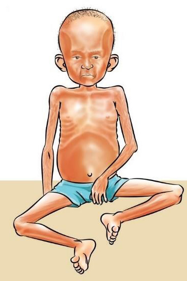

56


Food and Human Nutrition

Form Two
and eyes and extreme emaciated appearance. Other signs and symptoms include brittle hair, old face appearance resulting from loss of fat in the face, respiratory infections, irritability and anxiety. Figure 3.2 shows a child with an acute malnutrition without oedema.

Figure 3.2: A child with acute malnutrition
without oedema
Prevention and treatment of acute malnutrition without oedema
Acute malnutrition without oedema can be prevented by providing adequate and well-balanced meals that are easy to digest and served in small portions at regular intervals. It is essential to supply enough energy and protein-rich foods to repair the body. Provide the patient with
plenty of fluids, especially from fresh fruits. Seek medical attention to identify and treat any underlying infection.
(iii) Acute malnutrition with and without oedema
Acute malnutrition with both symptoms of wasting and pitting oedema is caused by acute or chronic protein and energy deficiency. In this condition, individuals develop symptoms of both wasting and pitting oedema. They are extremely malnourished and are at a greater risk of death than normal individuals hence they require urgent medical and nutritional
intervention.
Individuals
with this condition exhibit extreme thinness (wasting) alongside swelling due to fluid retention (pitting oedema).
This form of under-nutrition is common in children and was previously known as marasmic-kwashiorkor. A child with this condition shows signs of extreme thinness in some parts of the body and has an excessive fluid accumulation in other parts.
Signs and symptoms of acute malnutrition with and without oedema
The signs and symptoms of acute malnutrition with and without oedema include extreme thinness and oedema in some parts of the body, growth retardation, moon face, weak hair, skin changes, severe weight loss, fatigue, hunger and misery. Figure 3.3 shows a
17/09/2025 16:30